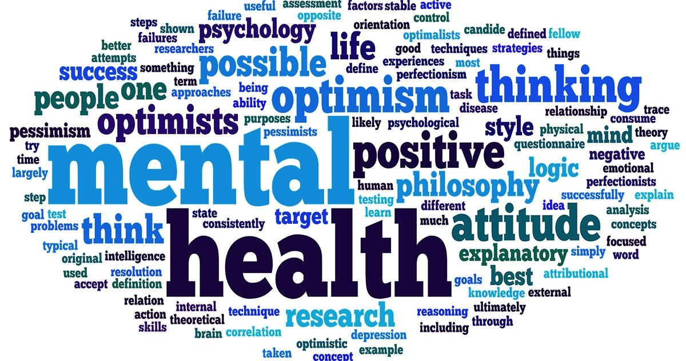
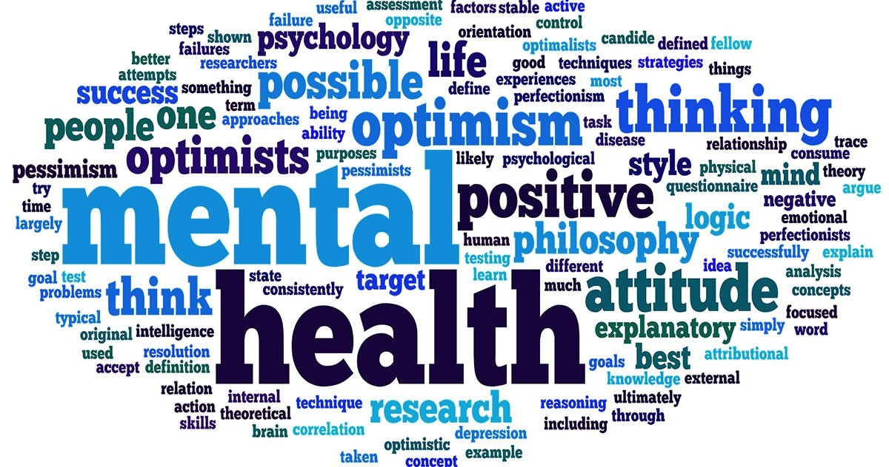

Young people getting less than their required sleep are more likely to develop many health problems such as: type 2 diabetes, poor mental health, and injuries.
Information is from Centers for Disease Control and Prevention (CDC) Sleep and Health. Avaiable at cdc.com/healthyschools accessed at (22/10/22)
- Have a consistent Bed-time and Wake-up time
- No phones (or blue light) 30mins before you go to bed
- Make sure your room is completely dark, could try black out blinds for example